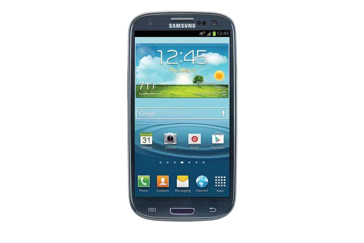
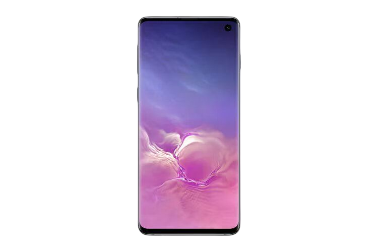

Samsung Galaxy S
Lançado pela primeira vez em Junho de 2010, o Samsung Galaxy S funcionava no Android 2.1 e tinha um ecrã de 800 x 480 Super AMOLED. Tinha também um processador de um só núcleo de 1GHz e 0,5GB de RAM.
A câmera traseira tinha 5 megapixels, enquanto que a frontal tinha apenas 0,3 megapixels. O que realmente se destacou sobre ela foi a personalização do Android. Embora tivéssemos visto alguns dos TouchWiz noutros dispositivos, parecia que funcionava no Galaxy S.
Samsung Galaxy S II
Também conhecido como Samsung Galaxy S II, o celular renovado foi lançado em Abril de 2011 e ostentava um ecrã 800 x 480 semelhante ao do seu predecessor. O processador recebeu um choque até ao dual-core e 1,2GHz, e havia 0,75GB de RAM.
A câmera traseira era de 8 megapixels desta vez, com uma câmera frontal de 2 megapixels. A Samsung adoptou widgets com a Galaxy S II, algo que o HTC estava realmente a empurrar..

Samsung Galaxy S III
Mais uma vez, mantendo os números romanos, por isso tecnicamente conhecidos como Samsung Galaxy S III, este modelo saiu em Maio de 2012 e foi o primeiro da série a ter um ecrã HD. A sua resolução de 1280 x 720 era bastante revolucionária na altura. Também suportava o modelo Android 4.0 Ice Cream Sandwich.
Havia um processador quad-core de 1,4GHz com 1GB de RAM no lançamento, embora a Samsung tenha ficado com uma câmera traseira de 8 megapixels. Estava ligeiramente mais esculpido do que o telefone anterior e parecia que a Samsung queria empurrar o design com um pouco mais de força.
Samsung Galaxy S4
Lançado em Abril de 2013, e abandonando os numerais romanos que ninguém usava quando se referia aos telefones Galaxy, o Galaxy S4 tinha um visor Full HD de 5 polegadas. Também aumentou o poder de processamento para um chip quad-core de 1,9GHz, com 2GB de RAM.
A câmera traseira também teve um salto, até 13 megapixels. A sensação de design que tínhamos tido a partir do S3 passou realmente por aqui: o Galaxy S4 era um ótimo telefone, apenas parecia e sentia-se bem.
Samsung Galaxy S5
Vindo em Abril de 2014, o Samsung Galaxy S5 também tinha um ecrã Full HD, mas era ligeiramente maior, medindo 5,1 polegadas (um modelo LTE-A acabou por subir isso para 2560 x 1440).
Havia um processador quad-core de 2,5GHz a bordo, com 2GB de RAM. E a câmera traseira foi mais uma vez melhorada, para um módulo de 16 megapixels. Mas a coisa mais interessante sobre a Galaxy S5 estava à volta da traseira, com uma textura como um gesso pegajoso. A Samsung ainda estava a utilizar as costas de plástico removíveis nesta altura.
Samsung Galaxy S6
A linha Galaxy S de Abril de 2015 foi a primeira a oferecer dois dispositivos separados ao mesmo tempo. O Galaxy S6 mais padrão apresentava um visor plano 2560 x 1440 Quad HD Super AMOLED, medindo 5,1 polegadas, enquanto a Samsung se movia para abraçar arestas curvas, resultando no Galaxy S6 Edge e no S6 Edge Plus. Foi um momento decisivo para a série Galaxy S, algo que continuou durante muitos anos.
Funcionava com um processador Exynos octa-core fabricado pela Samsung, tinha 3GB de RAM e uma câmera traseira de 16 megapixels capaz de gravar em Ultra HD. Foi adotada uma câmera de 5 megapixels para a frente.
Samsung Galaxy S6 Edge
Tal como o seu companheiro estável também lançado em Abril de 2015, o Samsung Galaxy S6 Edge tinha um ecrã Quad HD de 5,1 polegadas, processador octa-core, 3GB de RAM, câmera traseira de 16 megapixels e câmera frontal de 5 megapixels.
A diferença é que os lados do ecrã são curvados e enrolados para dar a ilusão de não haver luneta uma alternativa radical na altura. Havia também um modelo Galaxy S6 edge+.
Samsung Galaxy S7
O Samsung Galaxy S7 foi anunciado em Fevereiro de 2016 e veio com um ecrã de 5,1 polegadas de QHD (2560 x 1440).
Tal como o S6 antes dele, era a versão de ecrã plano de dois aparelhos, mas adicionou uma câmera de 12 megapixels de duplo pixel para melhor fotografia com pouca luz e um processador octa-core mais rápido.
A Samsung Pay foi ativada ao telefone, que podia funcionar através de sistemas de NFC e de banda magnética.
Samsung Galaxy S7 edge
Tudo girava em torno daquelas curvas no bordo do Samsung Galaxy S7 e uma sensação de que as exposições da Samsung eram inigualáveis.
A borda Galaxy S7 era um verdadeiro telefone de bandeira em todos os aspectos. Também foi anunciado em Fevereiro de 2016 e o seu visor de 5,5 polegadas de borda dupla QHD era simplesmente soberbo.
Todas as mesmas características que o S7 estavam a bordo e o design era mais redondo do que a borda S6 que o precedeu.
Samsung Galaxy S8
O Samsung Galaxy S8 foi o primeiro a apresentar o Infinity Display, que se referia ao facto de ter um ecrã de ponta a ponta praticamente sem luneta. O botão de casa montado na frente foi movido também para trás, embora numa posição ligeiramente embaraçosa - algo que a Samsung deveria corrigir com o S9.
Embora houvesse também uma segunda variante no S8 Plus, que vinha com um ecrã maior e melhor bateria, mas o Galaxy S8 standard veio com bordas curvas como padrão, afastando-se de um modelo standard plano.
Samsung Galaxy S9
À superfície, o Samsung Galaxy S9 parece muito semelhante ao S8 a partir de 2017. O telefone ainda oferecia aquele desenho de aresta curva e vem com um ecrã OLED de 5,8 polegadas e era, mais uma vez, à prova de água.
O Galaxy S9 também ofereceu emoji AR, o que permite ao telefone criar um avatar 3D digitalizando o seu rosto e criando uma gama de emoji personalizados para si. Estes podem ser utilizados ao conversar no WhatsApp ou no Facebook Messenger, por exemplo, em vez de utilizar emoji básicos.
O Samsung Galaxy S9+ também foi lançado juntamente com o S9, oferecendo uma câmera principal de dupla abertura que foi um passo acima do ano anterior.

Samsung Galaxy S10
O Samsung Galaxy S10 lançado juntamente com o S10+, o S10e mais acessível e um modelo 5G.
O carro-chefe de 2019 da Samsung apresentava muitas das mesmas facetas de design que conhecemos e adoramos. Houve também algumas melhorias com este modelo que incluíram conceitos líderes de mercado, como o sensor de impressões digitais UltraSonic.
Um sistema de câmera tripla, sugestões inteligentes de câmera automática e carregamento invertido sem fios também fizeram deste outro carro-chefe a bater. Tinha também uma câmera de furos na frente.

Samsung Galaxy S20
O telefone principal da Samsung para 2020 era o Samsung Galaxy S20. Havia também mais variantes premium no Galaxy S20+ e no S20 Ultra (abaixo).
O aparelho padrão levou o conceito de Infinity Display mais longe - quase eliminando completamente a luneta. Também comutou a câmera frontal do furo de função para o centro. Os tamanhos do ecrã do S20 e S20+ eram de 6,2 e 6,7 polegadas respectivamente, com resoluções Quad HD+ (3200 x 1440). Tinham também scanners de impressões digitais no ecrã, como os seus antecessores S10.
Talvez o maior salto geracional tenha vindo com uma tela para uma taxa de atualização de 120Hz, câmeras de lente tripla em ambas, e a S20+ também recebendo uma câmera Timeof-Flight. Ambos os telefones estavam habilitados para 5G, com uma versão 4G do S20 também disponível.
Samsung Galaxy S20 Ultra
Havia um novo nível de telefone em 2020, o lançamento do Samsung Galaxy S20 Ultra. Tinha um ecrã mamute - 6,9 polegadas, Quad HD+ (3200 x 1440) e 120Hz - mas talvez fosse melhor recordado em termos de design pela sua enorme unidade de câmera na parte de trás.
Além de um sensor de tempo de luz, as câmares de ultra-som de 108 megapixel principal, 48 megapixel 10x telefoto, e 12 megapixel ultrawide. Era também capaz de até 100x "Space Zoom" para alguma fotografia de longo alcance espantosa.
Samsung Galaxy S20 Fe
O Samsung Galaxy S20 FE (edição em leque) chegou como uma opção mais acessível, mas ao contrário do Galaxy S10e, não se sentiu comprometido.
Com um preço mais acessível do que os modelos S20, correspondia à potência - com Snapdragon 865 a nível global - tinha um grande visor e a potência de câmera dos modelos S20.
A construção era ligeiramente mais barata e tinha um visor plano, mas oferecia uma excelente relação qualidade/preço. A linha FE continuou a sentar-se nesta posição como uma atualização a meio do ano com especificações de bandeira.
Samsung Galaxy S21
O Samsung Galaxy S21 e o Galaxy S21+ de maiores dimensões levaram a linha telefónica da nave principal numa direcção ligeiramente diferente. Embora fossem um pouco mais baratos do que o preço de lançamento dos modelos S20 em 2020, houve um par de movimentos - reduzindo o visor para 1080p e mudando para um verso de plástico - que justificaram a redução do preço. Também regressou a um ecrã plano, como o Galaxy S7.
Mas eram ainda poderosos dispositivos de nível de bandeira, com um arranjo de câmera triplo e oferecendo taxas de atualização adaptativas para aquele ecrã, por isso, embora fosse apenas 1080p, ainda oferecia 120Hz. Mas ao mover-se ligeiramente para baixo em posição, significava que o S21 Ultra era o carro-chefe claro da Samsung em 2021.
Samsung Galaxy S21 Ultra
Enquanto a maior parte da atenção estará na enorme unidade de câmera nas costas, a Samsung tentou mudar o tópico de conversa para o acabamento Phantom Black do Samsung Galaxy S21 Ultra. Foi um visual e toque de primeira para o telefone de topo da Samsung. Com os modelos S21 a descer ligeiramente no posicionamento, houve um foco renovado no que o S21 Ultra oferecia, com uma oportunidade de melhorar em áreas que ficaram em falta no S20 Ultra.
Nova tecnologia de visualização e um repensar das câmeras na parte de trás, feito para um pacote mais atrativo, com a Samsung a procurar reafirmar-se como o telefone de bandeira a cobiçar - e agora o único modelo com um visor curvo.
Samsung Galaxy S21 FE
Um pouco mais tarde que a sua antecessora, a Samsung Galaxy S21 FE foi lançada em Janeiro de 2022, pouco antes do lançamento da gama Galaxy S22.
Oferecendo muitas das mesmas características de design que a gama Galaxy S21, a principal diferença no S21 FE foi a câmera traseira colorida. No que diz respeito ao tamanho, ela estava situada entre o S21 e o S21+ e também oferecia muitas das mesmas características, incluindo um ecrã de 120Hz, embora não fosse tão capaz como o S21.
Tal como a S20 FE, a S21 FE atingiu um ponto doce em termos de preço e características, com principalmente apenas uma descida na câmera para permitir o preço mais barato.
Samsung Galaxy S22
O Galaxy S22 da Samsung foi uma atualização interativa do Galaxy S21. Mais uma vez havia dois modelos - o S22 com um ecrã de 6,1 polegadas e o Galaxy S22+ com um ecrã de 6,6 polegadas.
Fora destas diferenças de tamanho, estes telefones eram basicamente os mesmos, oferecendo o mesmo design e construção, as mesmas cores, a mesma potência e hardware. Havia uma diferença na capacidade da bateria, é claro.
Ambos estes telefones também partilhavam características com o Galaxy S22 Ultra, que regressou como carro-chefe da Samsung em 2022.
.png)
Samsung Galaxy S22 Ultra
Atualizando a nave principal da gama, o Samsung Galaxy S22 Ultra suportou a caneta S e alojou-a internamente, pelo que muitos viram isto também como um substituto para a série Galaxy Note.
De fato, o design mudou ligeiramente nesses alojamentos, mas este dispositivo ainda estava embalado no carregamento da câmera superior da Samsung a partir dos anteriores telefones Ultra.
Tudo se resumia a números com uma câmera principal de 108MP, um visor de 6,8 polegadas e uma grande bateria - e o mais recente hardware disponível para 2022.
Samsung Galaxy S23
A Samsung Galaxy S23 adpta o desenho individual da lente do S22 Ultra, abandonando o desenho da câmera ao estilo da ilha nos últimos dois anos. Mas a estética geral do aparelho não se afastou muito da S22, que não era assim tão diferente da S21. Mas esta série de telefones também recebe o Snapdragon globalmente, com o Snapdragon para Galaxy a ver a mudança para longe do Exynos. No entanto, o visor e as câmaras são essencialmente os mesmos que o Galaxy S22. Mais uma vez, há a versão normal de 6,1 polegadas e uma maior Galaxy S23+ de 6,6 polegadas.
Samsung Galaxy S23 Ultra
O melhor telefone da Samsung para 2023 é o Samsung Galaxy S23 Ultra. Há alguns grandes movimentos neste telefone, embora o design não mude em relação ao S22 Ultra. Em vez disso, é a mudança para uma câmera fotográfica de 200 megapixels, prometendo mais detalhes, melhores imagens com pouca luz e muito mais. Há o mesmo poder que os outros modelos S23, mas também retém a caneta S para interações adicionais no ecrã.